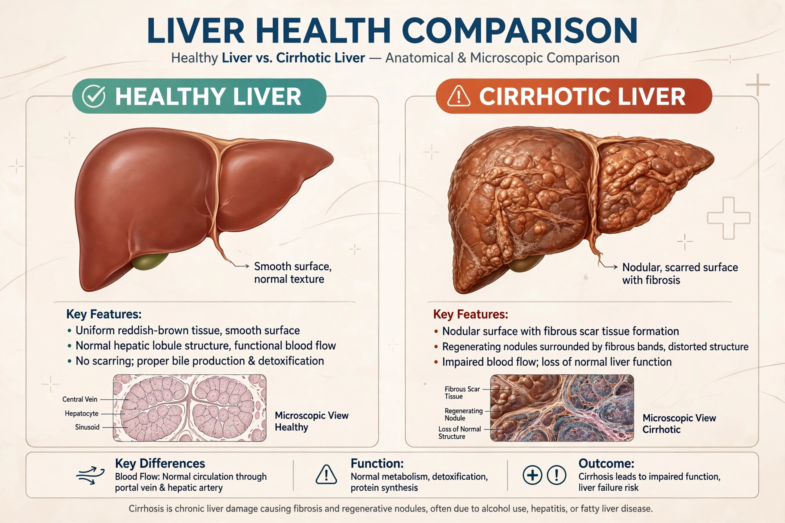

| Alcohol-related liver disease | |
|---|---|
| Specialty | Gastroenterology, hepatology |
| Symptoms | Often none early; jaundice, ascites, confusion in advanced disease |
| Causes | Long-term excessive alcohol consumption |
| Risk factors | Heavy drinking, female sex, obesity, hepatitis C, genetic factors |
| Prevention | Limiting or abstaining from alcohol |
| Treatment | Abstinence, corticosteroids (severe hepatitis), liver transplantation |
Alcoholic liver disease (ALD), also called alcohol-related liver disease (ARLD), is a term covering the liver manifestations of alcohol overconsumption, including fatty liver, alcoholic hepatitis and chronic hepatitis with liver fibrosis or cirrhosis. It is the major cause of liver disease in Western countries and accounts for a large share of cirrhosis deaths worldwide, alongside viral hepatitis and metabolic dysfunction-associated steatotic liver disease.

Fatty liver (steatosis) develops in most heavy drinkers and is reversible with abstinence. Alcoholic hepatitis is an acute inflammatory syndrome, ranging from mild to severe presentations with jaundice and liver failure; severe cases (Maddrey discriminant function ≥32) carry high short-term mortality and may respond to corticosteroids. Cirrhosis results from years of injury and scarring and can lead to portal hypertension, ascites, variceal bleeding, hepatic encephalopathy and hepatocellular carcinoma. Only a minority of heavy drinkers — roughly 10–20% — develop cirrhosis, with risk modified by sex, obesity, drinking pattern, nutrition and genetics (e.g. PNPLA3 variants).
Ethanol is metabolised to acetaldehyde and acetate, generating oxidative stress, gut-derived endotoxin exposure and immune activation that injure hepatocytes and activate stellate cells, which deposit collagen. Diagnosis rests on drinking history, blood tests (typically AST:ALT ratio above 2, raised GGT), imaging and sometimes biopsy; scores such as MELD guide prognosis and transplant assessment.
Sustained abstinence is the single most effective treatment and improves survival at every stage; medications for alcohol use disorder such as naltrexone, acamprosate and disulfiram support it. Corticosteroids benefit selected patients with severe alcoholic hepatitis, nutritional support is essential, and liver transplantation is an option for end-stage disease, increasingly offered without a fixed six-month abstinence requirement in carefully selected patients. See also Substance use disorder.